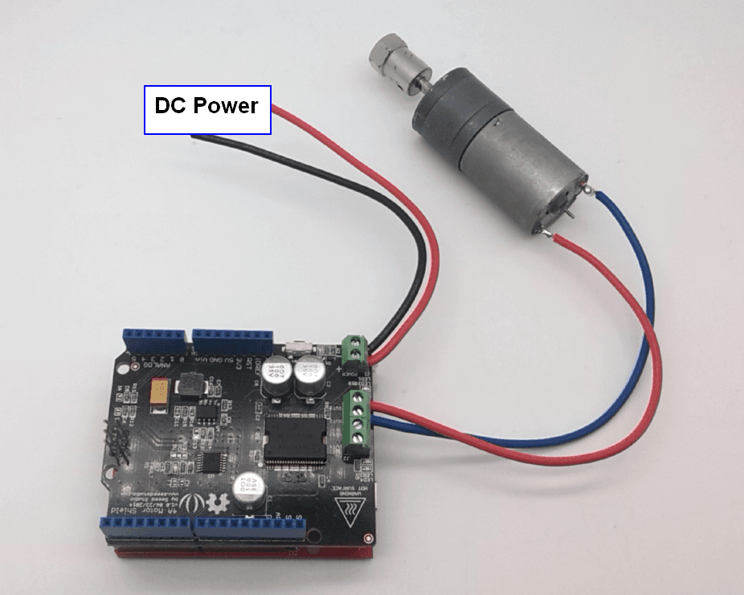
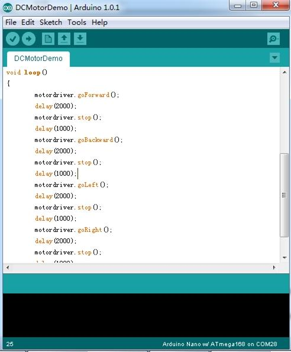

The 4A Motor Shield is based on the Freescale MC33932 dual H-Bridge Power IC , which can control inductive loads with currents up to 5.0A peak per single bridge. It lets you drive two DC motors with your Arduino/Seeeduino board, controlling the speed and direction of each one independently. You can also measure the motor current absorption of each motor, among other features.
The on board DC/DC converter suport a very wide range of input voltage, and can provide a 5V power supply for the microcontroller board with 100mA maximun current.So, you just need one power supply to drive the motors and power up the logic circuit.
Operating Voltage: 6V ~ 28V
DC/DC output: 5V 100mA @ "5V" pin
Output Current(For Each Channel ): 2A (continuous operation) / 5A(peak)
Output Duty Range: 0%~100%
Output short-circuit protection (short to VPWR or GND)
Over-current limiting (regulation) via internal constant-off-time PWM
Temperature dependant current limit threshold reduction
①：J1:DC Input connector.
②：J2:Motor Driver output connector.
③：EN,FT:Jumpers for EN control and Fault flag detection.If short circuit the EN jumper, the EN signal was mapped to the D4 pin ,you can control the H-Bridge disable output or reset the Fault flag by D4 pin. If short circuit the FT jumper, the fault flag signal was mapped to D3 pin ,you can read the fault flag from the D3 pin ether.
④: IO:Logic Voltage level Select Jumper. You can choose the control logic voltage level from this jumper.
⑤：IA,IB:Current sensor jumper. If you need to detect the motor current, you have to short circuit these jumpers.The motor current will be converted into voltage signal and can be read from A0,A1 pin.
Power Supply: You have to power up the shield from the J1(DC input connector).The input voltage range can be set up to 6Vdc ~ 28Vdc.The on board DC/DC converter can convert the DC input voltage to 5Vdc output voltage to supply the logic circuit.The DC/DC converter can also power up the microcontroller board(Arduino/Seeeduino) form "5V" pin for maximun 100mA current.
Motor Interface：Out 1 and Out 2(Out 3 and Out 4) connect Motor A(B) for DC Motor.
Do not touch the H-bridge IC or PCB board during working. Its temperature can reach up to 100 degrees in the case of full load operating.
Connect DC motor to the motor shield Output Pins OUT1& OUT2(OUT3& OUT4). And connect the drive voltage to the power supply terminals. Motor driver board can generate 5V supply voltage to seeeduino.

Install the library we provide in the Resources section into Arduino libraries file and find the example “DCMotorDemo” by the path: File->Example->MotorDrive->DCMotorDemo.
This demo enables the motor rotate in one direction for 2 sec, take a break for 1 sec and rotate in the reverse direction for 2 sec.

Schematic pdf
Eagle File
Motor Shield Library
MC33932 Datasheet